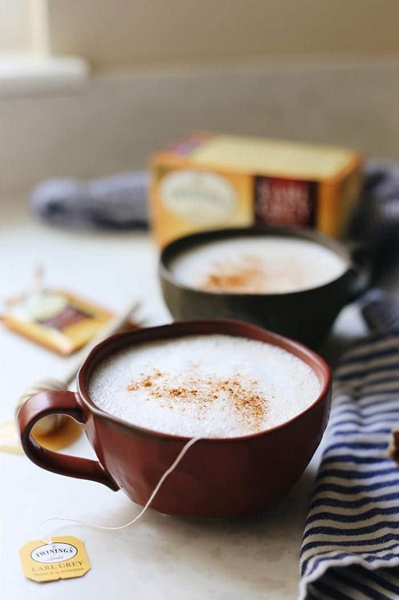

London Fog

Wether you just woke up or are cold, you want this.
The ultimate boost to of caffiene with the right amount of sweetnes to start your day.
Ingredients
1 Earl Grey tea bag
½ cup hot water
½ cup unsweetened vanilla almond milk (or other milk of choice)
¼ tsp vanilla extract
1-2 tsp raw honey, maple syrup or sweetener of choice
How to make
- Steep your tea bag in ½ cup of hot water for 3-5 minutes
- Mix together almond milk and vanilla extract and steam or froth
- Stir sweetener in with steeped tea and top with frothed milk
- Enjoy hot!
NOTE if you do not have a frother, heat up milk on stove top.
Return to Recipes